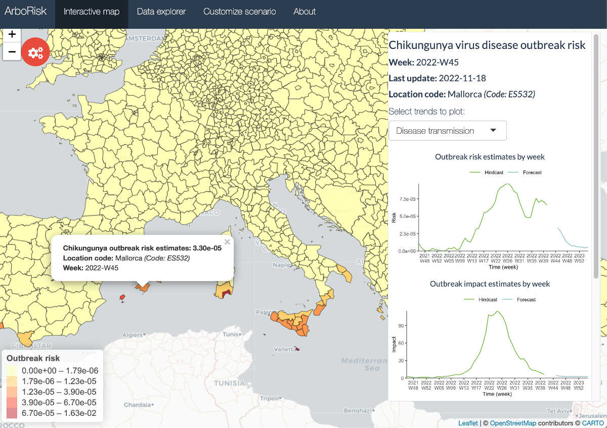

Climate change and human activities cast uncertainties on our knowledge of dynamics and distribution ranges of vectors and the pathogens they transmit, such as malaria, dengue fever, and yellow fever. Understanding their intricate environmental dependencies under constant change requires accurate mathematical representation and advanced computational power.
The Climate and Vector-Borne Diseases group aims to contribute planning effective management strategies to minimise health impacts of future outbreaks by developing predictive, reliable, and widely applicable vector and pathogen models.
-
VeCTOR is a Copernicus Climate Change Service (C3S) Demo Case, which produced a climate-sensitive habitat suitability index for the Asian tiger mosquito derived from climate reanalysis and projections.
The index was produced using a set of complementary methodologies, including the FuzzyLoc multi-decision support model, the PopDM large-scale climate-driven population dynamics model, and the VectorAI supervised machine learning and deep learning model ensemble.
-
ArboRisk is commissioned by the European Centre for Disease Control and Prevention (ECDC) to develop a data-driven model-based risk assessment tool to provide interactive maps of Aedes-borne viral diseases (specifically dengue, chikungunya and Zika) based on the dynamic transmission model developed at The Cyprus Institute.
The tool provides 6-month risk forecasts for all administrative regions in the EU/EEA, and allows running customized simulations with additional vector control and increased public health effectiveness for a selected local area.
ArboRisk: Interactive maps of Aedes-borne viral disease outbreak risk.
-
VEClim is funded by the Wellcome Trust, UK, through the Digital Technology Development Awards (Climate Sensitive Infectious Disease Modelling). It is the first such award the Wellcome Trust has ever made directly to a Cypriot institution.
VEClim will develop a powerful digital engine with an aim to perform periodic and on-demand numerical simulations to predict the abundance and activity of important disease vectors, and the risk of diseases transmitted by them at any location and time, up to the end of the century.
VEClim's predictions will be accessible via a user-friendly, interactive web-based geographic information and decision support platform, which will be integrated into the high-performance supercomputing environment of The Cyprus Institute.
-
MozzyJet is an innovative aerial mosquito control vehicle designed to complement and augment traditional control methods as well as reach any mosquito breeding sites previously inaccessible to humans in an easy-to-use, low-cost, and environmentally friendly way. This project is currently on hold, and awaits future funding opportunities.